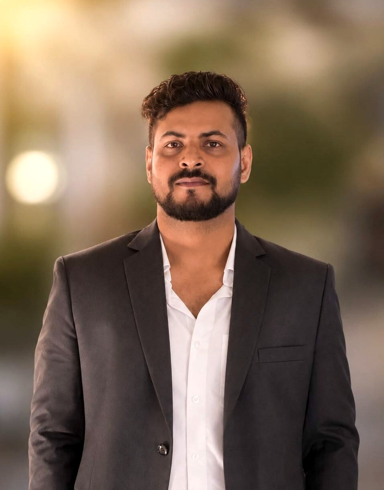

AI · Semantic Retrieval · Knowledge Organization
I develop computational approaches for representing, retrieving, organizing, and evaluating scholarly and cultural knowledge, with particular interests in semantic search, multilingual information access, and scholarly communication.

My current work centres on the Indigenous Semantic Retrieval Gap — the observation that mainstream semantic retrieval systems are trained and evaluated almost entirely on high-resource languages, leaving multilingual and Indigenous-language library collections poorly served. I am developing and evaluating retrieval methods for this gap (filed for copyright protection, Diary No. LD-25312/2026-CO), extending this into hybrid semantic retrieval for electronic thesis and dissertation discovery, and a multilingual semantic OPAC module for the Scheduled Languages of India. In parallel, I use computational and bibliometric methods to study how AI governance is discussed in policy documents and scholarly literature.
Semantic search, embeddings, retrieval-augmented generation, and retrieval evaluation.
Ontologies, knowledge graphs, multilingual and Indigenous information access.
Bibliometrics, scientometrics, citation analysis, and research evaluation.
Computational projects supporting the research above. Full code on GitHub.
I am interested in visiting-researcher / visiting-scholar opportunities with universities, research centres, libraries, and interdisciplinary research groups working at the intersection of AI, information science, knowledge organization, digital libraries, and scholarly communication.
Retrieval systems that understand meaning rather than matching keywords, and how to evaluate them rigorously.
Representing and connecting knowledge across languages and resource levels, including for Indigenous and cultural-heritage collections.
Computational and quantitative methods for understanding how scholarly knowledge is produced, cited, and evaluated.
Python, NLP, embeddings, semantic retrieval, retrieval-augmented generation, and topic modelling.
Bibliometrics, scientometrics, citation analysis, and statistical analysis (SPSS, R, VOSviewer).
Library and information science, digital libraries, knowledge organization, and scholarly communication.
Peer-reviewed publications, international conference contributions, open-source repositories, and a filed methodology.
These are potential research directions building on my existing work, not claims of completed projects.
Extend my existing Indigenous Semantic Retrieval Gap work to a host institution's collections or languages.
Investigate how embeddings and citation structures can improve scholarly discovery, building on my RAG and bibliometric work.
Explore computational representations connecting concepts, documents, and entities, drawing on my ontology work.
Extend my published bibliometric and topic-modeling studies to new research-evaluation questions.
I welcome contact from researchers and research groups working on semantic retrieval, knowledge organization, digital libraries, or scholarly communication.